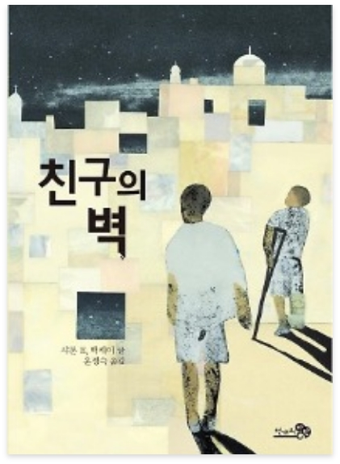

♡
★2020년도 1급 선정도서★
친구의 벽
-
저자 | 샤론 E.맥케이
출판사 | 천개의바람
출판년도 | 2014.10.20
이 책은 유수프와 샘, 두 소년의 이야기이다. 유수프는 이슬람교도이자 팔레스타인 소년이다. 샘은 유대인이자 이스라엘 소년이다. 둘은 전쟁 중에 태어났다. 어느 날, 무시무시한 두 사건이 소년들의 세계를 영원히 바꾸어 놓았다. -
저자소개
저자 샤론 E. 맥케이는 십대 시절의 여름을 종파 분쟁이 치열했던 북아일랜드 벨파스트에서 보낸 것이 계기가 되어 문화 갈등에 관심을 쏟는 작가이자 저널리스트가 되었다. 캐나다 군이 주관한 전쟁 예술가 프로그램에서 아프가니스탄에 파견된 최초의 아동소설 작가이다. 2000년에 《찰리 윌콕스》로 총독상(GOVERNOR GENERAL AWARD)을 수상하였으며, 지은 책으로 《소년병 이야기》《전쟁의 형제들》《칸다하르의 천둥》들이 있다. -
출판사 서평
팔레스타인과 이스라엘의 분쟁은 유대인들이 자신들이 떠나온 팔레스타인에 유대 민족국가를 세우겠다는 시오니즘운동에서 시작되었다. 여기에 제1차 세계대전 중이던 영국이 전쟁에서 이기기 위하여 시오니즘을 지지함과 동시에 아랍인들에게도 도움을 요청했고, 양쪽 모두에게 팔레스타인을 내주겠다는 약속을 함으로써 전쟁에 불을 지폈다.
 자세히
자세히
해당 도서는 독서퀴즈 서비스가
제공되지 않습니다.